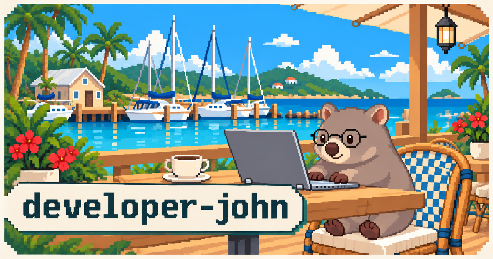
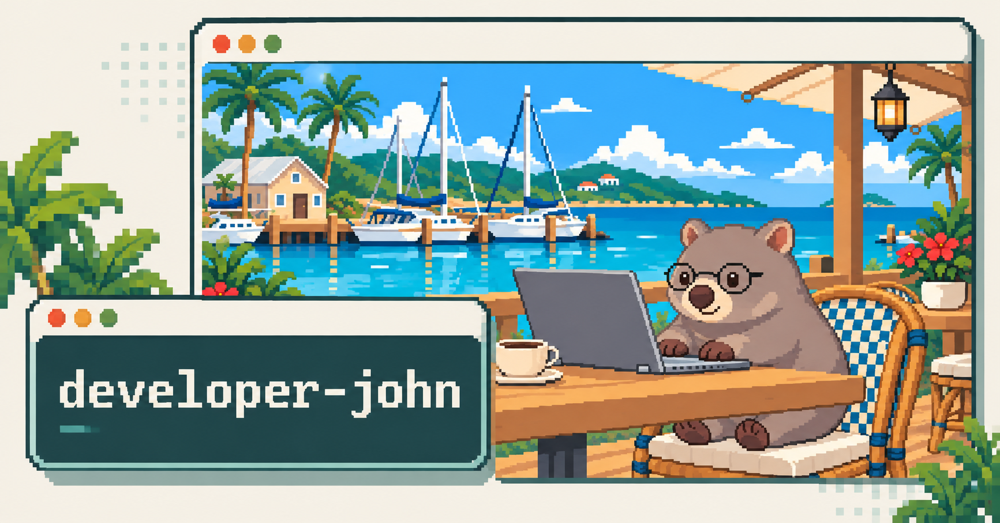
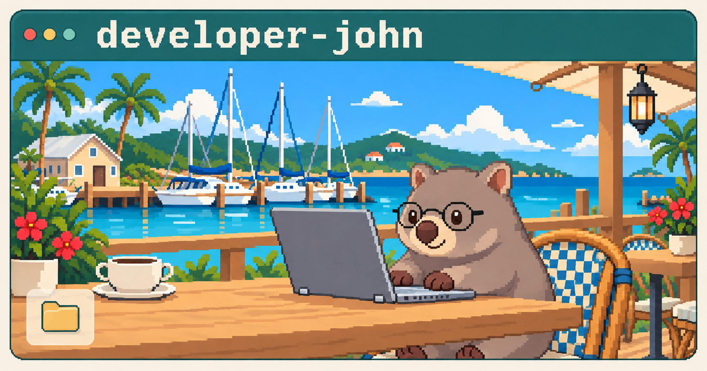
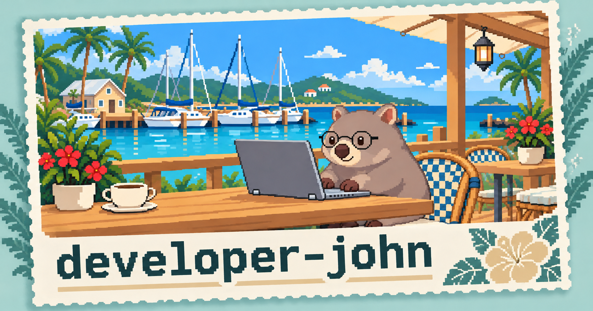
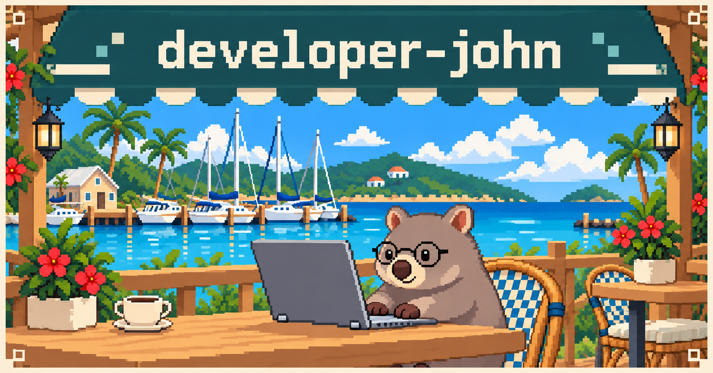

항구 포스터
포스터처럼 정리한 그림과 제목의 배치.

JOHN’S SPACE / SOCIAL IMAGE STUDIES
작은 화면에서 읽히는 배치와 타이포의 차이를 비교합니다.
작은 미리보기로 먼저 살펴보고, 이미지를 눌러 전체 그림을 확인하세요. 확대 화면에서 이전·다음 버튼이나 좌우 방향키로 시안을 바꿀 수 있습니다.
포스터처럼 정리한 그림과 제목의 배치.

겹친 창으로 구분하는 그림과 소개 영역.

우표 모티프와 넓은 여백을 이용한 구성.
브라우저 창 안에 담은 그림과 타이포.

이름을 크게 보여주는 글자 중심의 구성.
엽서처럼 나눈 그림과 짧은 문구의 영역.

청록색 테두리로 묶는 그림과 제목.
디렉터리 목록에서 가져온 정보 배치.
넓은 항구 풍경과 간결한 타이포의 조합.
카페 간판을 떠올리게 하는 이름과 그림의 배치.
